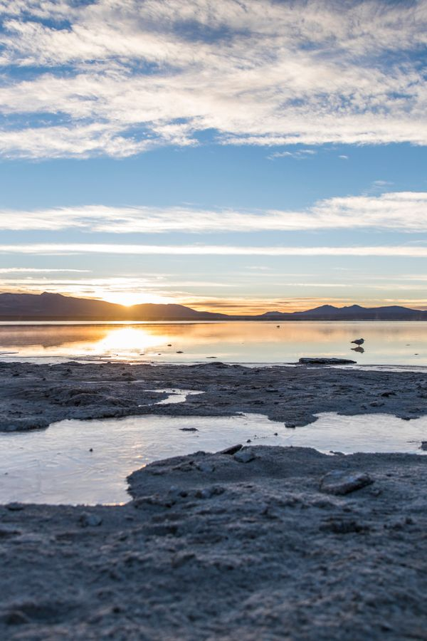
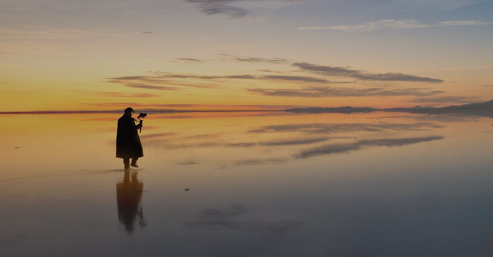
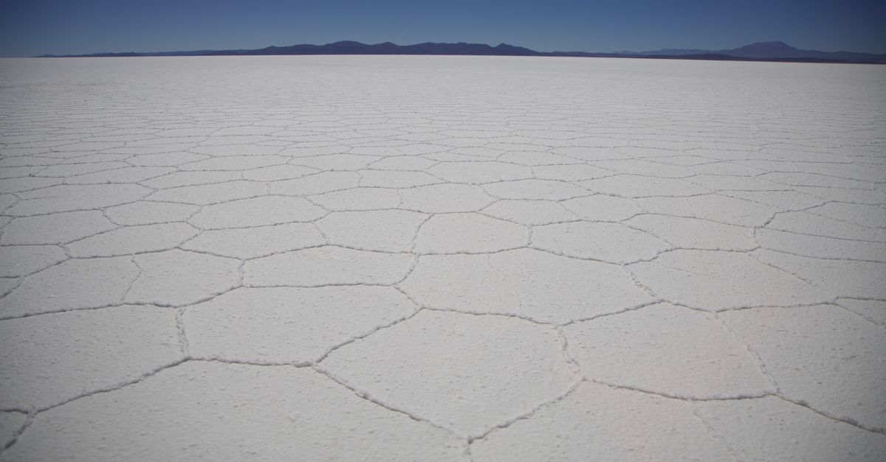
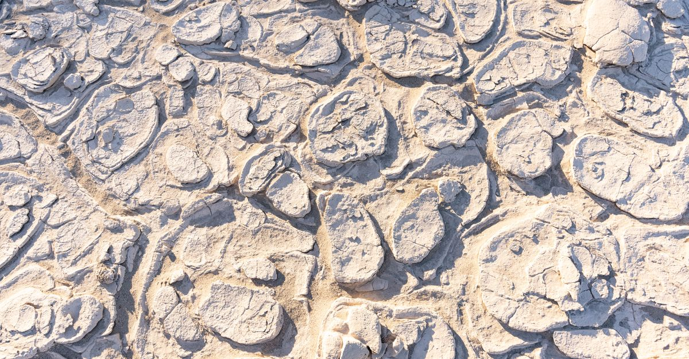
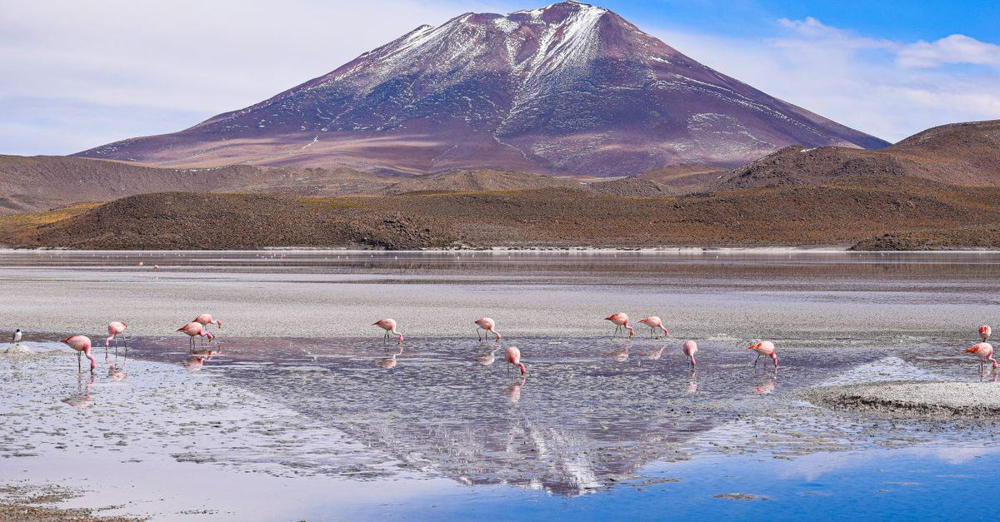
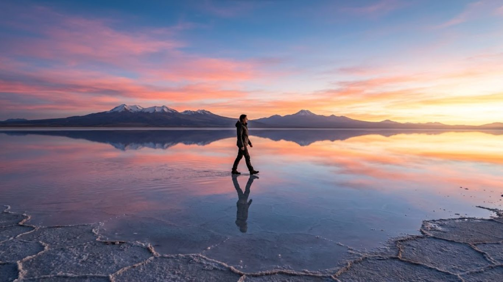
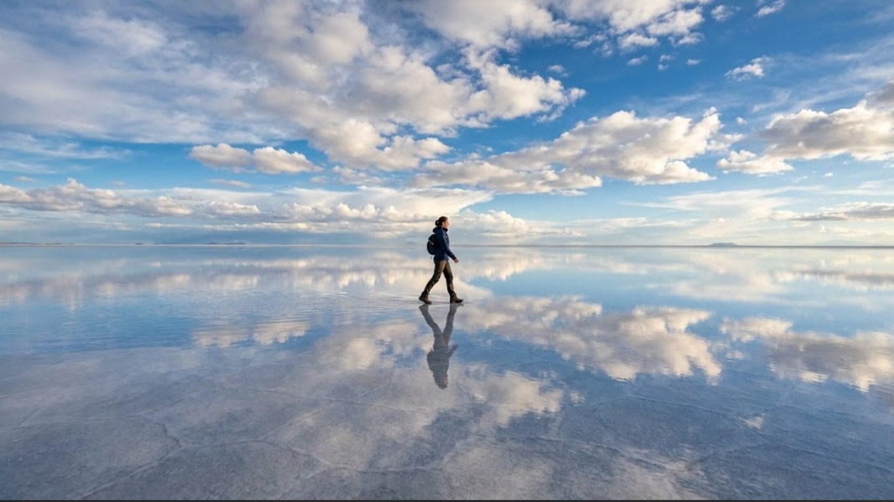
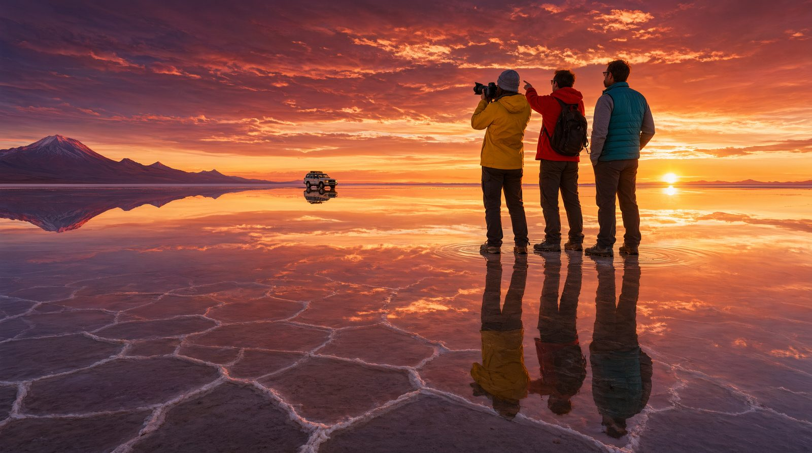

✦ Imágenes que inspiran ✦
Galería del Espejo del Cielo
Doce fotografías del Salar de Uyuni, la maravilla natural de Bolivia
Ver las fotografías
Recorrido visual
Fotografías Destacadas
Un carrusel automático con cinco postales del salar
Imágenes que
inspiran
Galería de Imágenes
Descubre la belleza del salar a través de estas 12 fotografías. Haz clic en cualquier imagen para verla ampliada.








Crédito de las imágenes: todas las fotografías de esta galería pertenecen al
banco de imágenes libres Pexels y se almacenan de forma local en la carpeta
img/ del proyecto. Consulta la sección
Fuentes y créditos para ver las direcciones de origen.